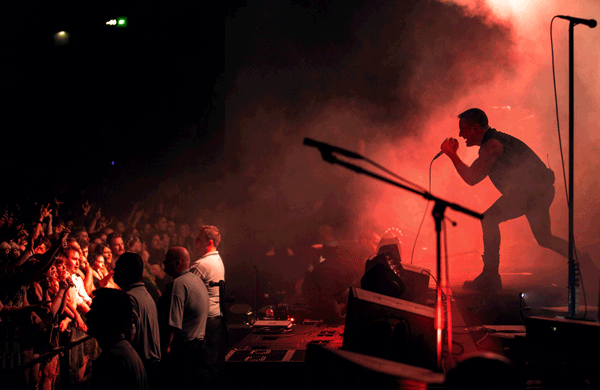

<!--<ion-menu [content]="content" type="overlay">
  <ion-header>

  </ion-header>

  <ion-content>
    <ion-card>
      
      <div class='card-title'>
        EcuaBill
      </div>
      <div>
        <p class='card-subtitle'>{{user.name}} <br> {{user.email}}</p>
      </div>
    </ion-card>

    <ion-list no-lines>
      <button ion-item menuClose *ngFor="let p of pages" (click)="openPage(p)">
        <ion-icon item-left large [name]="p.icon" [color]="isActive(p)"></ion-icon>
        <h2>{{ p.title }}</h2>
        <p>{{ p.description }}</p>
      </button>
      <ion-item-divider color="light">Account</ion-item-divider>

      <ion-item ion-item menuClose (click)="logout()">
        <ion-icon item-start name="log-out"></ion-icon>
        <h2>Salir</h2>
        <p>Cerrar Sesión</p>
      </ion-item>
    </ion-list>
  </ion-content>
</ion-menu>-->

<ion-menu [content]="content" type="overlay" id="menu-avatar">
  <ion-content>
    <div #header>
      <ion-row style="align-items:center;">
        <ion-col col-3>
          <!--
          <span class="icon-badge">4</span>-->
        </ion-col>
        <ion-col col-6>
          
        </ion-col>
        <ion-col col-3>
         <!-- -->
        </ion-col>
      </ion-row>
      <ion-row style="justify-content: center;">
        <h3 class="align-center">{{user.name}}</h3>
      </ion-row>
      <ion-row style="justify-content: center;">
        <p class="align-center">{{user.email}}</p>
      </ion-row>
    </div>
    <ion-list no-lines>
      <button ion-item menuClose *ngFor="let p of pages" (click)="openPage(p)">
        <ion-icon item-left large [name]="p.icon" [color]="p.color"></ion-icon>
        <h2>{{ p.title }}</h2>
        <p>{{ p.description }}</p>
      </button>
      <ion-item-divider color="light">Account</ion-item-divider>
      <ion-item ion-item menuClose (click)="logout()">
        <ion-icon item-start name="log-out" color="light"></ion-icon>
        <h2>Cerrar Sesión</h2>
      </ion-item>
    </ion-list>
  </ion-content>
</ion-menu>

<!-- main navigation -->
<ion-nav [root]="rootPage" #content swipeBackEnabled="false"></ion-nav>